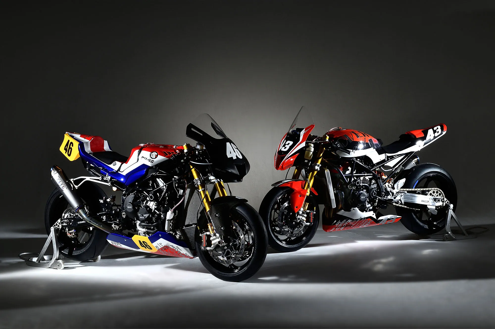
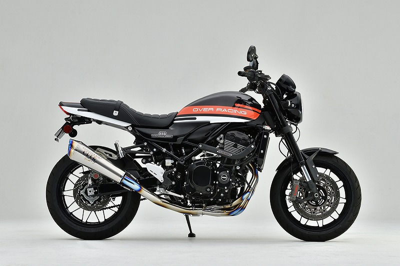
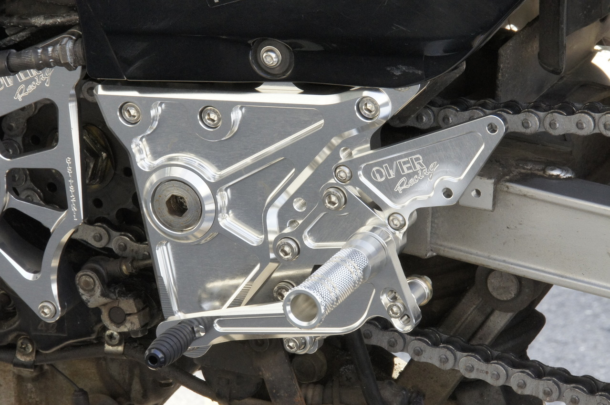
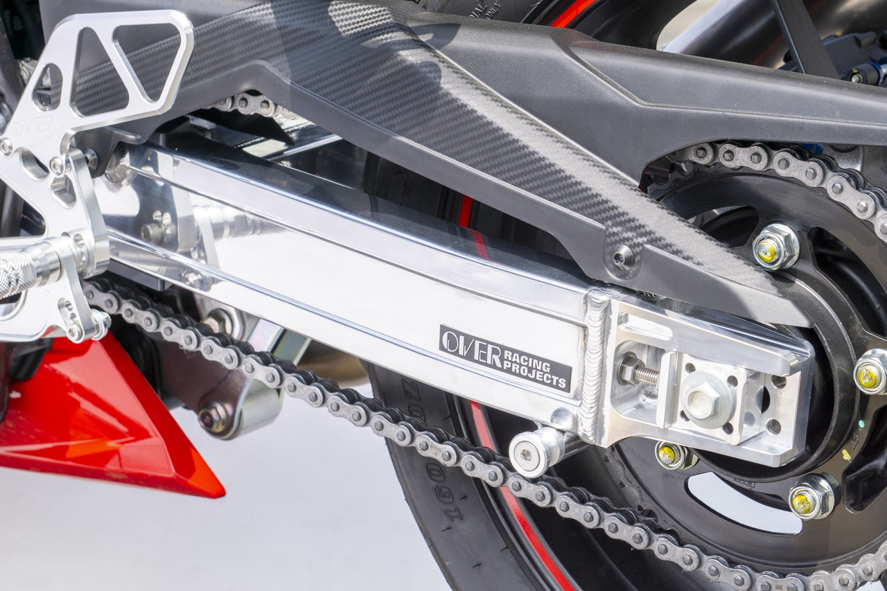
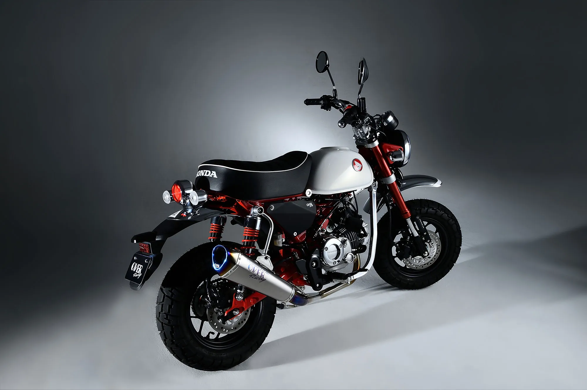
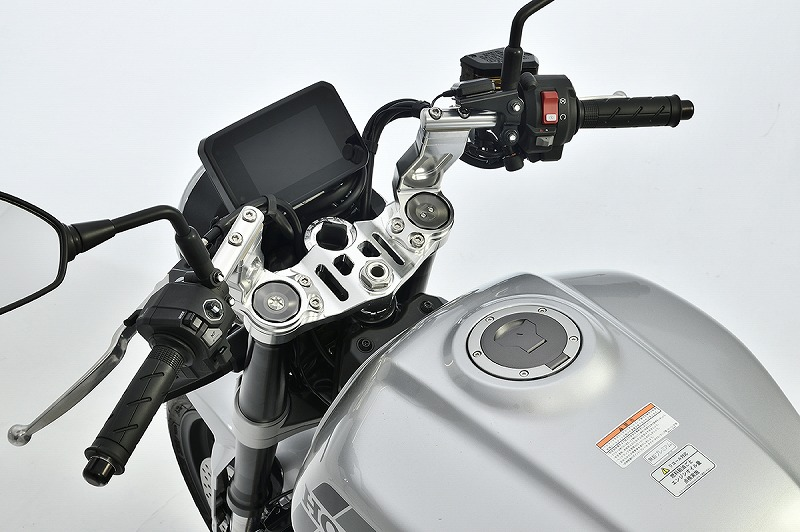

BRAND / MARKET / ACTIVATION STUDY
BUILD
BEYOND
ORIGINAL.
鈴鹿で、昨日の自分を超える。レースから始まり、オリジナル車両へ向かう。OVER Racingは「部品メーカー」より広い、ものづくりのブランドである。
1982創立SUZUKA三重県鈴鹿市OV-46公式確認できるOV号4.4 / 5Webike公開評価
S0101EXECUTIVE
SUMMARY
SUMMARY
OVER Racingの核は、「楽しく、カッコ良く、そして安全に」を、レース・車体設計・少量高品質生産で実装すること。マフラーやステップだけでなく、スイングアーム、ホイール、フレーム、完成車構想まで扱う“鈴鹿のコンストラクター”である。
RACE-BORNORIGINAL BIKESTRUCTURAL BEAUTYSUZUKA
BRAND OVERVIEW
速さを求めて、会社を始めた。
創業の目的そのものがレース参戦。挑戦、独創性、カッコ良さ、安全が一本の線でつながる。“「レースで優勝する」という目標に向かって、ただ速いバイクを造る為に会社を経営してきました。”
1982年7月創立。オートバイのカスタムパーツを製造販売しながら、オリジナルフレームのOV号を開発。欧州スーパーモノ、鈴鹿8耐、現代のTaste of Tsukubaやトライアルまで、実走を開発の場としている。
S01PHILOSOPHY楽しく、
楽しく、
カッコ良く、
そして安全に。
見えない場所も妥協しない誠実なものづくりが、結果として安全につながるという思想。
PRODUCT SYSTEM
車体を、部分ではなく全体で考える。
排気、操作、車体、オリジナル車両。各製品は独立していても、目指す走りと造形は同じ。
01EXHAUST
Muffler
マフラーGP-PERFORMANCE、TT-Formula、SESMICなど、音・出力特性・重量・造形を車種ごとに統合。ブランドの最大カテゴリー。
- チタン／ステンレス
- 車種専用設計
- 政府認証製品
- 多様なサイレンサー造形

02
03CHASSIS
Swing Arm
スイングアームOVERを他社と分ける構造部品。軽さだけでなく、強度・剛性・しなりのバランスを設計し、車体挙動を作る。
- 7N01アルミ
- 軽量化
- 適度なしなり
- 溶接・切削の構造美

04ORIGINAL
OV Series
オリジナルフレーム／車両1982年以来の『オリジナルバイクを作る』を可視化する象徴。市販部品の集合ではなく、車体全体を設計できる証明。
- OV-01〜46
- レース実証
- 独自フレーム
- コンストラクター精神
ADJACENT PORTFOLIO
ハンドル、トップブリッジ、サブフレーム、スライダー、ブレーキ、ホイール、外装、キャリア、グッズまで展開。新型車1台を複数カテゴリーで深くカスタムできる。
ENGINEERING & RACING
レースは広告ではなく、開発方法。
設計・加工・溶接・組立・実走・改善が同じ組織で回ることが、OVERの説得力を生む。01構想
→誰もやらない車両・構造を考える
02設計
→車体全体で寸法とバランスを決める
03製造
→切削、曲げ、溶接、仕上げを形にする
04実走
→レースとイベントで限界を確かめる
05市販化
体感できる製品へ戻す

オリジナル車両を頂点に置く
OVシリーズが、商品企画・開発技術・生産技術・営業・サービスを一段高くする共通目標。
数値だけでなく、しなりを設計
スイングアームは強度と剛性だけでなく、ライダーが感じる適度なしなりまで価値にする。
見えない場所もカッコ良く
造形は装飾ではなく、機能を妥協せず作った結果。品質と安全を視覚的に伝える。
走行会をユーザー対話に使う
イベントは体験接点であり、要望を企画へ戻すフィードバックループでもある。
BRAND ASSETS
OVERだけが持つ、5つの記憶装置。
連番で蓄積するオリジナルマシン。挑戦を一目で語れるブランドアイコン。
世界的レース都市に根差す、技術・歴史・人材・走行環境の地理的資産。
レーシングレッド、黒い機能面、アルミとチタンの素材色。
溶接ビード、肉抜き、曲げ、切削面が、説明前から技術を感じさせる。
レース、走行会、CUP、展示会でブランドを「見る」から「参加する」へ。
RACE実証
＋ORIGINAL独創
＋CRAFT誠実
＝乗る人の夢までカッコ良くする。
AUDIENCE & JOBS
性能を買う人と、夢を買う人。
SEGMENTDESIREHERO PRODUCTMESSAGE
スポーツ走行層操作・軽さ・剛性感を体感したいステップ／マフラー／車体部品レースで試し、道路で楽しめる
ネオクラシック層ノーマルの魅力を壊さず質を上げたいZ900RS／CB1000F系やりすぎない構造美
4MINIカスタム層小さな車体で最大限遊びたいMonkey／GROM／DAX／OV-44遊びを本気で設計する
構造・工作好き素材、加工、溶接、設計背景を味わいたいスイングアーム／ホイール／フレーム部品そのものが技術の証拠
販売店・カスタムショップ説明しやすく、長く支持される商品車種別セット／補修／取付支援単品でなく完成像を売れる
CUSTOM JAPAN × OVER RACING
ブランドの深さを、販路の広さへ。
カスタムジャパンの会員網、適合DB、制作、CRM、営業、物流を、OVERの車種深掘り・体験・ストーリーへ接続する。STRATEGIC THESIS
OVER Racingは単品SKUより「車両完成像」で強くなる。カスタムジャパンは、車種データと販売店接点を使い、1台の段階的カスタム計画として提案・在庫・取付を束ねるべきである。
Z900RS、CB1000F、Monkey125など、車種ごとにStage 1〜3の完成像、適合、併売、予算を提示。
EC × 適合DB × 商品画像加工・取付・セットアップを説明できる30店を選定し、展示車、研修、優先在庫、店頭イベントを提供。
会員網 × 営業 × 物流OV、開発者、スイングアーム、マフラー音、加工工程を記事・動画・紙面で連載。
制作 × SNS × メルマガメーカー発表・適合確定後、商品マスター、特集、営業資料、モール情報を共通データから同時更新。
商品DB × CRM × モール高額・構造部品は、商品だけでなく相談予約、取付店、工数目安、必要同時交換部品まで提示。
営業 × CS × ショップ走行会、CUP、展示会を試乗・相談・販売店研修・取材の複合接点として活用。
PR × 営業 × コンテンツCOMPETITIVE LANDSCAPE
全体シェアは非公開。カテゴリーでは強さが見える。
実売・出荷シェアは公開されていないため、Webikeの公開商品・評価・ランキング、記事、店頭・共同企画を代理指標として比較。ブランド商品。新製品168、シリーズ16、レビュー1,300件規模。
S05100商品。公開売れ筋順位はBabyFaceに次ぐ2位。
S06約378商品。YOSHIMURA、MORIWAKI等と競合。
S07公開ブランド順位1位。OVERの独自優位が最も明確。
S08ARENA主要競合OVERの位置勝ち筋
バックステップBabyFace／COERCE／STRIKER公開売れ筋2位、評価4.5
操作感＋車体全体の完成像。スイングアームやハンドルとのセット提案。
マフラーYOSHIMURA／MORIWAKI／KITACO／TRICKSTAR強いが競合密度も高い
音だけでなく出力、造形、車体部品との統一感。SESMIC等の歴史資産も活用。
スイングアームG-Craft／J-TRIP／ACTIVE系公開順位1位
強度・剛性・しなりと、溶接・切削の構造美をヒーローコンテンツ化。
4MINI総合G-Craft／SP武川／KITACO／YOSHIMURAOV-44まで作る独創性
単品数でなく「小さな車体を本気で作り切る」プロジェクトとして差別化。
ネオクラシックARCHI／PMC／MORIWAKI／K-FACTORYZ900RSで別注実績
車種別トータルカスタムと、小売・ショップ共同企画を拡張。
1,493商品、ランキング、レビュー、関連記事。商品量とUGCの両方が強い。
2025年末にZ900RS限定4品を共同企画。特集と店頭を結び、ブランド文脈まで保有。
S10店舗の取扱ブランドとして確認できるが、公開の専用特集はNAPSほど強くない。
ヤングマシンにブランドページと継続PR。BikeBros等にも新製品・別注が掲載。
S11キーワードページで確認できる主要露出はNAPS発表。自社発の物語拡張余地。
S13公開検索では専用ハブの強い露出を確認できず。BtoB実売は社内データで別途評価。
競争戦略
Webikeの商品量、NAPSの限定企画、専門媒体のブランドポストはすでに強い。カスタムジャパンは同じことを複製せず、販売店の提案・取付・在庫・再注文を一体化する「車種別カスタム実装網」を独占領域にする。
CROSS-FUNCTIONAL ORCHESTRATION
一つの開発を、全社で売り切る。
PR、メディア、SNS、BtoB、モール、自社EC、営業を、一つの車種テーマと素材セットで同期。ONE VEHICLE重点車種
→ONE STORY開発理由
→ONE MASTER適合・素材
→ALL CHANNELS同時展開
→SELL THROUGH消化・再注文
新型車プロジェクト、OV新号、レース結果、ショップ網、共同企画を発表。開発者コメント、走行動画、仕様表、写真を媒体キット化。
掲載／指名検索／記事流入溶接、切削、音、装着前後、OVストーリー、ショップ取付を連載。1取材から短尺、カルーセル、ストーリーへ再編集。
保存／完視聴／商品遷移WEB特集を母艦に、メルマガは車種別提案、LINEは即納・締切・相談通知。利益、併売、工数、補修まで販売店視点で提示。
導入店／初回発注／再注文Amazonは型番・適合・比較、楽天は車種特集と回遊、Yahoo!は検索・PayPay・配送。価格より正規性と情報精度で選ばれる。
検索順位／転換／返品率公開領域はブランド・車種・技術の理解、会員領域は価格・在庫・販促素材・営業相談。全モールと営業資料の一次情報源へ。
自然検索／記事→商品／会員発注Pro Builder 30へ展示・研修・相談会を提供。商談で対象車保有、競合、取付課題、失注理由を集め、開発とコンテンツへ戻す。
商談／採用／消化／VOC発売前4週から、同じ物語を重ねる。
重点SKU、適合、在庫、価格、表現、権利を確定。
重点店研修と先行受注。FAQを公開素材へ反映。
PR、記事、SNS、BtoB、モール、営業を同時公開。
取付、音、走行、店頭事例を追加し再配信。
売れた車種・店・素材へ在庫と露出を再配分。
OPERATING MODEL
商品開発は事実、各部門は成果に責任を持つ。
週次25分で障害を除き、月次45分で認知→商談→受注→再注文を確認。四半期ごとに重点車種と投資を入れ替える。
WORKOWNERDOSUPPORT
重点車種・SKUブランド責任者商品開発仕入・営業・EC
適合・技術・権利商品開発商品DB／制作OVER
PR・記事・SNSマーケ責任者PR／制作商品開発
BtoB・CRMBtoB責任者EC／CRM営業・物流
モール・BtoCBtoC責任者各EC担当制作・CS
店頭消化営業責任者担当営業商品開発・物流
PRIORITY ACTIONS
最初の12週間で、勝ち筋を作る。
Z900RS Complete Path
マフラー、ステップ、ハンドル、車体部品をStage 1〜3で束ね、予算と取付店まで提示。既存の認知と共同企画実績を活用する。
OVER Pro Builder 30
スポーツ・ネオクラシック・4MINIに強い30店を選定。展示サンプル、研修、優先在庫、相談会、事例制作をセット提供。
Why OVER Works
スイングアームをヒーローに、強度・剛性・しなり、加工、溶接、実走を可視化。カテゴリー1位の理由をブランド全体へ波及。
12-WEEK PILOT
1車種 × 15SKU × 30店舗
成功条件 ①重点店70%以上が研修完了 ②全チャネル同日公開 ③記事接触店と未接触店の発注率比較 ④取付相談→受注率 ⑤返品・適合問合せ ⑥90日追加発注を計測。
実行原則
値引きを物語にしない。 技術、正規性、適合精度、取付、即納を優先する。
共同企画の重複を避ける。 NAPSやRough & Roadの既存別注と競合しない車種・色・販路をメーカーと確認する。
実売シェアは社内で作る。 受注・出荷・導入店・再注文を接続し、公開ランキングとは分けて管理する。
SOURCES & NOTES
参照情報。
2026年8月1日時点の公開情報。価格、適合、法規、在庫、ランキングは必ず最新情報を再確認する。S01
OVER Racing 公式サイト理念、創業、会社概要、ニュース、イベント、OVシリーズ
↗S02OVER Racing オンラインショップ車種検索、商品カテゴリー、適合、価格、取扱説明書
↗S03OVER Racing スイングアーム Type7材料、重量、強度・剛性・しなりの設計思想
↗S04OVER Racing BACK-STEP削り出し、ポジション、ストリートとスポーツの両立
↗S05Webike OVERブランド商品数、評価、レビュー、記事、カテゴリー構成
↗S06Webike バックステップ商品数、レビュー、売れ筋ブランド順位
↗S07Webike マフラー商品数、評価、売れ筋ブランド順位
↗S08Webike スイングアームブランド公開ランキング上の競合関係
↗S09NAPS OVER Racing特集歴史、製品価値、Z900RS別注企画、店頭接点
↗S10NAPS × OVER Racing 発表Z900RS向け限定ビレットパーツ4品の共同企画
↗S11WEBヤングマシン ブランドページブランドポスト、CB1000F開発、OVシリーズ、編集記事
↗S12BikeBros × Rough & RoadZ900RS用別注カラー・専用設計の共同商品例
↗S13PR TIMES キーワードページ現状確認できる対外発表の露出
↗S14カスタムジャパン 企業サイトBtoB会員、販売店リーチ、物流、商品DB
↗S15カスタムジャパン BtoB通販商品検索、会員機能、EC、コンテンツ導線
↗S16カスタムジャパン 採用・事業紹介インハウス制作、EC、紙カタログ、ダイレクトマーケティング
↗S17カスタムジャパン 沿革カタログ、展示会、販路開発の蓄積
↗資料の扱い
本資料は公開情報をもとにした社内検討用の分析です。戦略・機会・施策はOVER Racing公式の見解ではなく、今後のメーカー・社内ヒアリングで検証する仮説です。掲載商品画像・ロゴの権利は各権利者に帰属します。